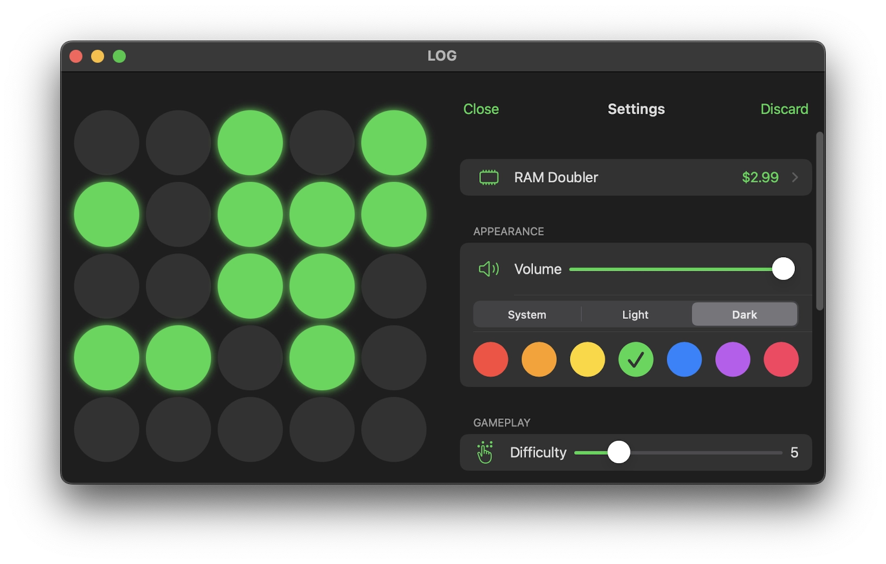

Lights Off Game
A modern take on a classic


- 223 levels for 8,388,608 puzzles to solve
- Free to play and ad-free (doesn't drain your pocket or your battery)
- Baudy dial-up Synthesizer
- 7 different color schemes with matching icons
- See your solved puzzle history
223 levels for 8,388,608 puzzles to solve
Free to play and ad-free (doesn't drain your pocket or your battery)
Baudy dial-up Synthesizer

7 different color schemes with matching icons
See your solved puzzle history